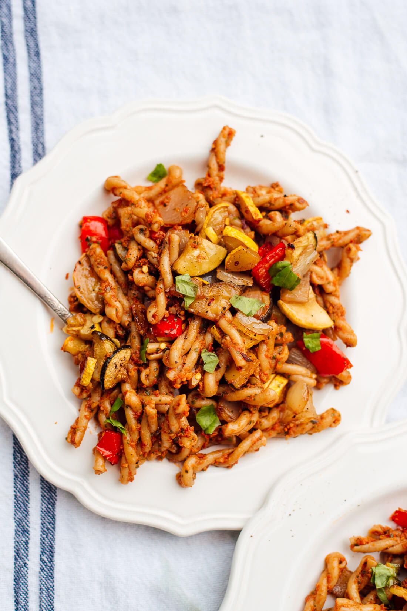

Tomato Pesto Pasta

Description
This is a tasty garlicy spiral pasta dish made with home made sun-dried tomato pesto pasta.
Ingredients
- 1 6.7-ounce jar sun-dried tomatoes, packed in oil
- 1 cup packed fresh basil leaves, plus extra for garnishing
- ¼ cup slivered almonds
- 3 to 4 cloves garlic, to taste
- 1 tablespoon fresh lemon juice
- ¼ to ½ teaspoon salt, to taste
- Pinch red pepper flakes
- ¼ cup extra-virgin olive oil
- Totally optional: ½ cup freshly grated Parmesan or nutritional yeast, to taste
- Pasta and roasted vegetables
- 8 ounces whole grain pasta (I used DeLallo’s organic whole wheat gemelli, but rotini or penne would work
well, too)
- 1 medium zucchini, diced
- 1 medium yellow squash, diced
- 1 medium red bell pepper (or orange or yellow), diced
- 1 medium yellow or white onion, diced
- 2 tablespoons olive oil
- 2 tablespoons balsamic vinegar
- Salt
- Freshly ground black pepper
Directions
- To roast the vegetables: Preheat oven to 425 degrees Fahrenheit. Whisk together the olive oil and balsamic
vinegar. On a half-sheet pan or other large, rimmed baking sheet, combine the diced zucchini, yellow squash,
bell pepper and onion. Drizzle the olive oil mixture over the vegetables, sprinkle with salt and pepper and
toss with your hands until the vegetables are evenly coated. Arrange the vegetables in a single layer. Bake
for about 30 to 40 minutes, tossing halfway, until they are cooked through and golden.
- To cook the pasta: Bring a large post of salted water to boil. Cook pasta until al dente, according to
package directions. Before draining, reserve about 1 cup pasta cooking water. Transfer the cooked pasta to a
large serving bowl.
- To make the pesto: First, toast the almonds in a small skillet over medium-low heat, stirring frequently,
until fragrant and starting to turn golden on the edges, about 4 minutes. In the bowl of your food processor
(a blender might work, too), combine the sun-dried tomatoes and their oil, the basil, toasted almonds,
garlic, lemon juice, ¼ teaspoon salt and a pinch of red pepper flakes.
- Blend, scraping down the sides as necessary, until the contents are mixed together and roughly uniform.
Drizzle in the olive oil while running the machine and blend until you’ve reached a relatively smooth,
pesto-like consistency. If you’d like to add Parmesan, stir it into the pesto now. Taste and stir in
additional salt and pepper, if necessary. The pesto will be thick, but we’ll thin it out with cooking water
soon.
- Pour the pesto into the warm pasta and drizzle in ¼ cup reserved cooking water. Toss to combine, adding more
splashes of cooking water to thin as necessary. Toss in the roasted vegetables. Sprinkle with some chopped
fresh basil and serve.